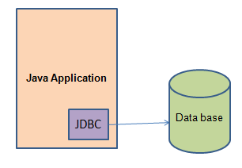
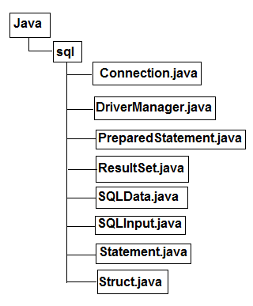
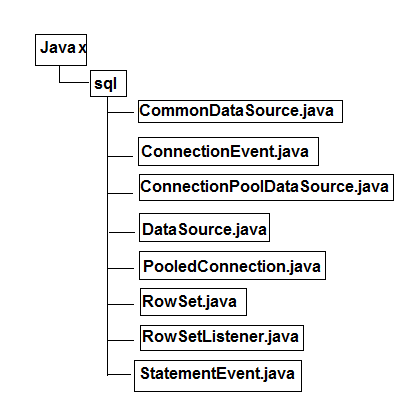
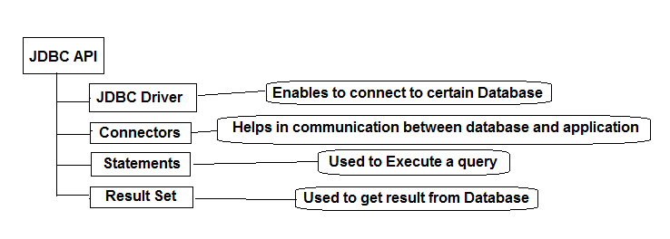

JDBC
JDBC is an acronym for
Java
Data
Base
Connectivity.This technology is an API for Java Programming that provides a way to connect to Database.
JDBC was released as a part of JDK 1.1

JDBC classes are contained in Java.sql and Javax.sql Package.

JDBC API mainly has:

1. JDBC Driver :A JDBC driver enables a Java application to interact with a database.
To connect with database, JDBC requires driver.
The JDBC driver gives the connection to the database and implements the protocol for transferring the query written by user and result given by database.
2. Connectors: Connectors provide a way of interactaction to database
and the applicattion.
3.Statement : It helps us to write and execute the query.
4.Result Set : Result set is used to get the output.
Steps to use Jdbc
1.Install the Database Server.Download the JDBC Driver for your DBMS.Add the jar to libraries.Example if are using OracleXE in eclipse add ojdbc.jar in libraries.
2. Establish the Connection:
To load the driver we use Class.forName("Class_Name");
Class_name for various database are:
1. For MySql - com.mysql.jdbc.Driver
2. For Oracle - oracle.jdbc.driver.OracleDriver
3.For DB2 - com.ibm.db2.jdbc.app.DB2Driver
4. For sybase - com.sybase.jdbc.SybDriver
Note:We can also use static registerDriver() method of the java.sql.DriverManager class in place of Class.forName();.
The getConnection() method of DriverManager is used to establish a connection to a database. It uses a username, password, and a jdbc url to establish a connection to the database and returns a connection object.
Connection connection=DriverManager.getConnection(url, username, password);
where url is jdbc:oracle:thin:@localhost:1521:xe for oracle 10g and jdbc:mysql://localhost/port_no/database_Name
for MySql.
Username is user name registered with data base and Password is the registered password.
3. Create Statement and Execute query:
We can create Statement by 3 types:
1. Statement: Used to implement simple SQL statements with no parameters.
2. PreparedStatement:They Extends Statement,mainly used for the precompiled SQL statements that may contain input parameters.
3. CallableStatement:They Extends PreparedStatement, Used to execute stored procedures that may contain both input and output parameters.
Statement stmt = connection.createStatement();
Now To execute a query, call an execute method from Statement
ResultSet rs = stmt.executeQuery(query);
4.Process the result:
While(rs.hasNext())
{
System.out.print(rs.getString());
}
5. Close the Connection using
stmt.close();
Basic example to use Jdbc Connection with Oracle 10g:
Step-1
createte table emp in oracle10g with username=nitin and password=nitin
Step-2
create class Crudopr
OutPut
choose number to perfome operation
Table in Database
Download Example